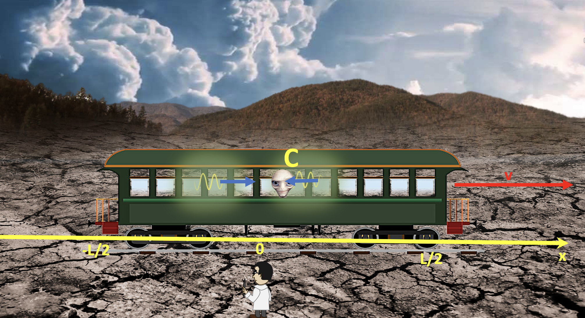

Forrige side🙂 🙁Et tankeeksperimentPADLET

Her ser vi event C illustrert. Event C er når lysstrålen fra lynnedslag A treffer øyet til passasjer P slik at passasjeren ser at lynet har slått ned foran. Toget har beveget seg litt til høyre (med hastighet v), lysstrålen fra A her beveget seg mot venstre. Siden P har beveget seg bort fra lysstrålen fra B, så har denne lysstrålen enda ikke truffet og passasjer P vet dermed enda ikke at det skjedde et lynnedslag bak.